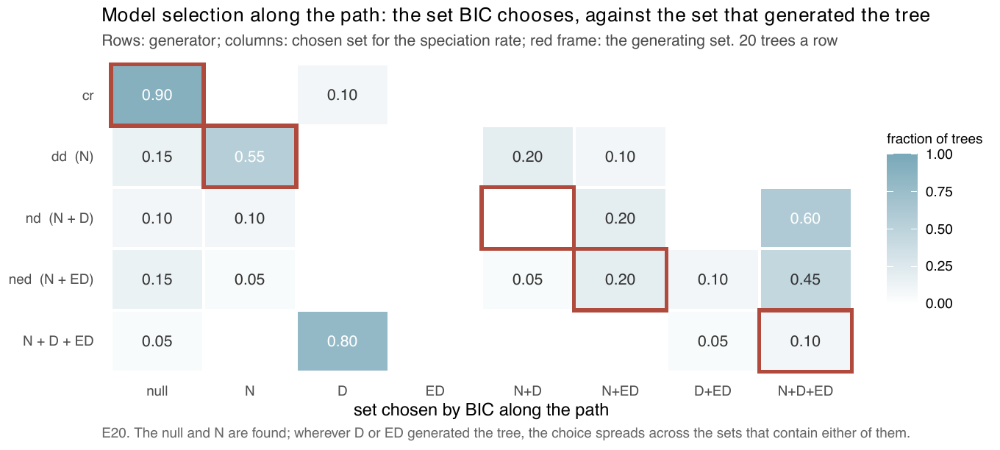
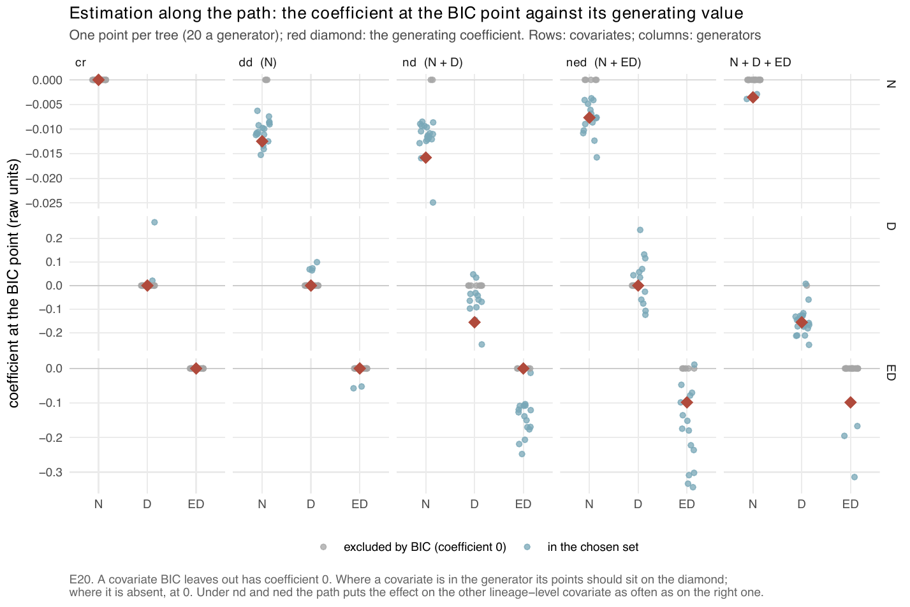

E20 — Selection along one dgLARS path over the covariates
| Status | complete (100 trees, no errors); the path reads \(D\) from lineage_table(), which emphasis 4e0b9dd changed, and is rerun on E46's trees within E47 (Estimability). The second arm (path at the MCEM estimate) was not run here; it became E33 (a) |
| Package build | not recorded per run; the audit puts the four libraries in use at 373eec1 … f0dff93, identical to clean builds |
| Driver / analysis | sim/E20-path.R; figures fig-path-sets, fig-path-recovery (sim/figures-path.R) |
| Data | results/E20/path.csv (100 rows), results/E20/design.rds, 15 saved paths in results/E20/paths/ |
Question
Until E20, model choice was a set of pairwise AIC contests between nested models (E12, E18, E19). covariate_path() replaces them with one differential-geometric LARS path (Augugliaro, Mineo & Wit 2013, dglars) over every covariate a rate can read — \(N\), \(D\), ED — on the Poisson-regression form of the log-linear point process that the M-step maximises, with the hidden lineages drawn by importance sampling. The order of entry says which covariates the data ask for first; BIC along the path picks a point. E20 asks whether that one path selects the generating set, measured apart from MCEM's convergence by drawing the hidden lineages at the generating parameters.
Design
| parameter | value | meaning |
|---|---|---|
| generators | cr; dd; nd; ned; mixed \(N + D + \mathrm{ED}\) |
exponential link, 100 tips, turnover 0.10, crown 15 |
nd effect |
\(\beta_D = \log 0.65\) per unit of the \(D\) scale | -0.155 per unit at a \(D\) scale of 2.77 (the sd of pendant age at the present in a dd clade) |
ned effect |
\(\beta_{ED} = \log 0.65\) per unit of the ED scale | -0.0982 per unit at an ED scale (\(\mathrm{PD}/N\)) of 4.39 |
dd |
\(\beta_N = -0.0125\) | \(K\) 184; recalibrated per generator |
| mixed | both \(\beta_D\) and \(\beta_{ED}\) | |
| trees | 20 per generator | 100 trees |
| draws | 3000 at the generating parameters | the 150 of largest weight enter the path with their weights |
| proposal | surrogate where the generator has no \(D\) term (cr, dd, ned); thinning where it has (nd, mixed) |
|
| criterion | BIC along the path, separately for speciation and extinction; AIC recorded beside it |
Recorded per tree: the first covariate to enter, the BIC set, whether it equals the generating set, each covariate's inclusion and coefficient, for both rates.
Pre-set rule
00-design.md §E20: the BIC set equals the generating set on \(\ge 80\%\) of trees for cr, dd, nd and ned; on the mixed generator both \(D\) and ED are in the BIC set on \(\ge 80\%\); a covariate absent from the generator is included on \(\le 10\%\) of trees; no extinction covariate (none generates extinction) on more than 10%. Cells with median ESS below 10 are reported and excluded from the selection statement. If the mixed generator fails while the single ones pass, \(D\) and ED are reported as not separable at this size and effect. The second arm (path at the MCEM estimate) runs only if this one passes.
Results
Speciation path, 20 trees a generator:
| generator | proposal | median ESS of 3000 | < 10 | exact set | sets chosen (count) | \(N\) / \(D\) / ED included | first to enter | coefficient at the BIC point, where kept |
|---|---|---|---|---|---|---|---|---|
cr |
surrogate | 3000 | 0 | 0.90 | ∅ 18, \(D\) 2 | 0.00 / 0.10 / 0.00 | \(D\) 14, \(N\) 4, ED 2 | — |
dd |
surrogate | 2424 | 0 | 0.55 | \(N\) 11, \(N{+}D\) 4, ∅ 3, \(N{+}\)ED 2 | 0.85 / 0.20 / 0.10 | \(N\) 17, \(D\) 3 | \(N\) at 0.85 of its value on 17 (q 0.72-0.90) |
nd |
thinning | 24.4 | 5 | 0.00 | \(N{+}D{+}\)ED 12, \(N{+}\)ED 4, \(N\) 2, ∅ 2 | 0.90 / 0.60 / 0.80 | \(D\) 12, \(N\) 8 | \(D\) at 0.40 on 12 (sign 0.83); spurious ED median -0.13 on 16 |
ned |
surrogate | 5.4 | 16 | 0.20 (sampler-limited) | \(N{+}D{+}\)ED 9, \(N{+}\)ED 4, ∅ 3, \(D{+}\)ED 2, \(N\) 1, \(N{+}D\) 1 | 0.75 / 0.60 / 0.75 | \(D\) 10, \(N\) 9, ED 1 | ED at 1.78 on 15 (q 0.90-2.74; sign 0.93); spurious \(D\) median +0.04 on 12 |
| mixed | thinning | 41.2 | 0 | 0.10 | \(D\) 16, \(N{+}D{+}\)ED 2, \(D{+}\)ED 1, ∅ 1 | 0.10 / 0.95 / 0.15 | \(D\) 20 | \(D\) at 1.02 on 19 (q 0.82-1.14) |
- The extinction path admits nothing on any tree of any generator.
- On the 15 saved paths AIC chooses the same set as BIC on 11 and is the looser of the two.
- The path costs a median 65-82 s per tree after the augmentation.
- "Exact set" for the mixed generator is \(N + D + \mathrm{ED}\); its rule is "both \(D\) and ED in the set", met on 3 of 20 (0.15).

cr and dd concentrate on their own cell (0.90, 0.55); on nd, ned and the mixed generator the choice spreads over sets containing \(D\), ED or both, and the mixed generator returns \(D\) alone on 0.80.
dd and \(D\) on the mixed generator sit on their diamonds; on nd the effect is split between \(D\) and a spurious ED, and on ned ED overshoots beside a spurious \(D\).Conclusion
Rule met for cr only. dd's exact set is 0.55 (\(N\) in the set on 0.85, \(D\) falsely added on 0.20 against a 0.10 ceiling); nd never gets \(N + D\); ned gets \(N + \mathrm{ED}\) on 0.20 on a sampler-limited cell (ESS 5.4); the mixed generator returns \(D\) alone on 0.80 and both \(D\) and ED on 0.15, so by the design's own reading \(D\) and ED are not separable at 100 tips and this effect. The reason is shared signal: both read the pendant edge (rank correlation 0.545 with each other, 0.85 and 0.83 with pendant age on dd clades, covariate-correlations.csv), and once one is in the set the other's score is close behind. So at 100 tips the path selects and estimates among the null and \(N\) (\(N\) at 0.85 of its value), and cannot apportion a lineage-level effect between \(D\) and ED. The second arm was conditional on a pass and was therefore not run under E20; E33 (a) ran it as its own experiment.
The path reads \(D\) from lineage_table()'s Poisson rows, which took \(D\) at the segment's midpoint before emphasis 4e0b9dd and take its constant value on the segment from that commit, the same change that moved d's \(\beta_D\) from 0.70 and 1.46 to 0.95 and 1.16 of its value on E44's complete trees. Every set above was computed on the earlier rows, \(D\) being a candidate on every path; the path suite is rerun on E46's trees within E47.
Related
- E12, E19 — the pairwise contests the path was meant to replace.
- E21 — E21b, the same path with \(K\) offered and an
nkgenerator. - E22 — the E20 design at 50, 200 and 400 tips.
- E23 — the one-call ladder, the other route to model choice.
- E33 — the path at a fitted estimate, and the extinction path with a driver.